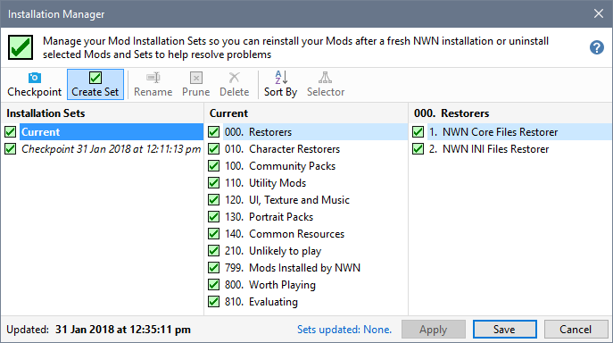
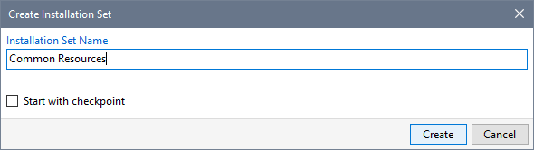
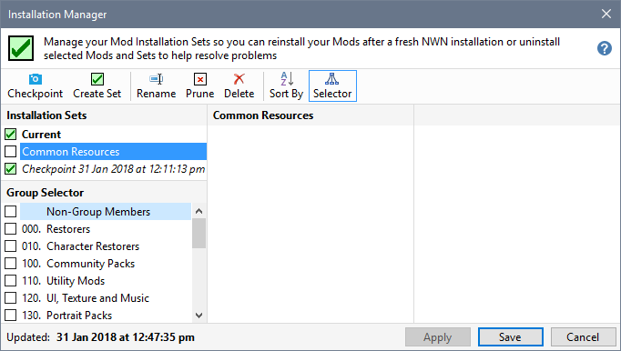
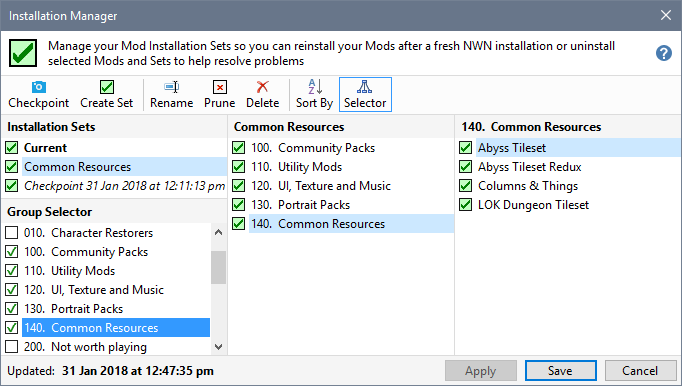

A Mod Installation Set is a user defined Installation Set specifying which Groups to monitor.
- Press Ctrl+N or click Create Set.

- Type in the name you want use for your Installation Set and click Create. You can tick (check) the Start with checkpoint option if you want to include all Groups containing installed Mods in your new Set.

- Your Mod Installation Set is created and the Group Selector shown so you can choose which Groups to include.

- Tick (check) the Groups you want to include in your Installation Set. Clear the tick (uncheck) the Groups you want to remove.

- Click Save to write the updated information to disk.
Related Topics
Create Checkpoints
Create Mod Installation Sets
Work with Installation Sets